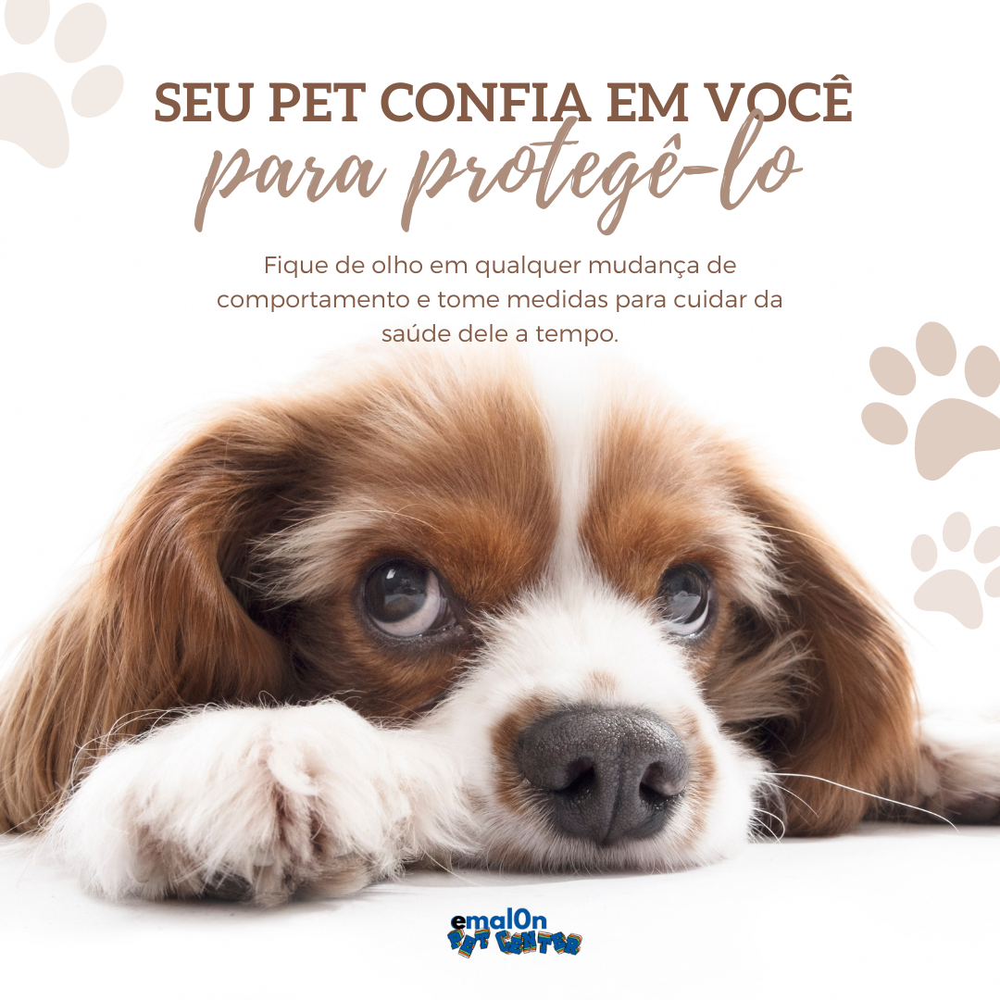
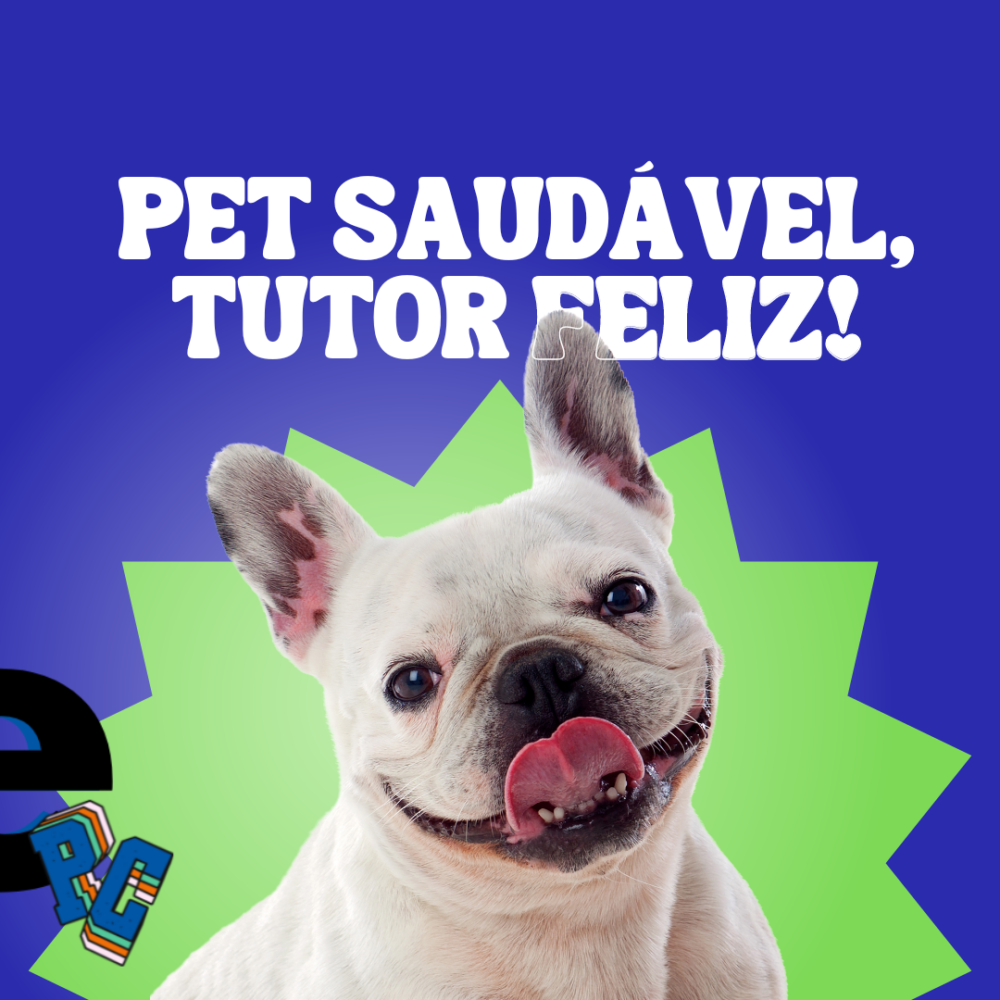

Você sabia?
Curiosidade
entre as 8 semanas e os 6 meses, precisará de 3 a 4 porções por dia, enquanto a partir dos 6 meses pode reduzir o número de refeições para 2 por dia. À medida que crescem, os gatinhos precisam de diferentes tipos e formas de alimentação para os ajudar a manterem-se saudáveis.